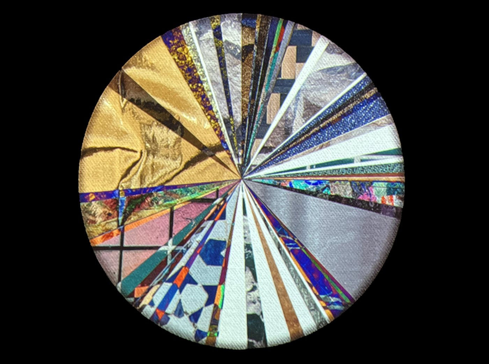

An interactive projection that builds itself from its audience, one viewer at a
time
Role
Artist & Creative technologist
Tools
TouchDesigner · Depth camera
Venue
SVA Flatiron Gallery — Technological Perseverance
A portrait of presence
Census is an artwork that builds itself through its audience. At its center is a slowly rotating pie
chart, which begins as a blank canvas and gradually fills with unique textures — one for each viewer.
Over the run of the show, the chart fills up into a record of everyone who came over to have a look.
Census captures the data of presence, recording the community through the act of participation.

The chart at the end of the exhibition — every slice is one viewer